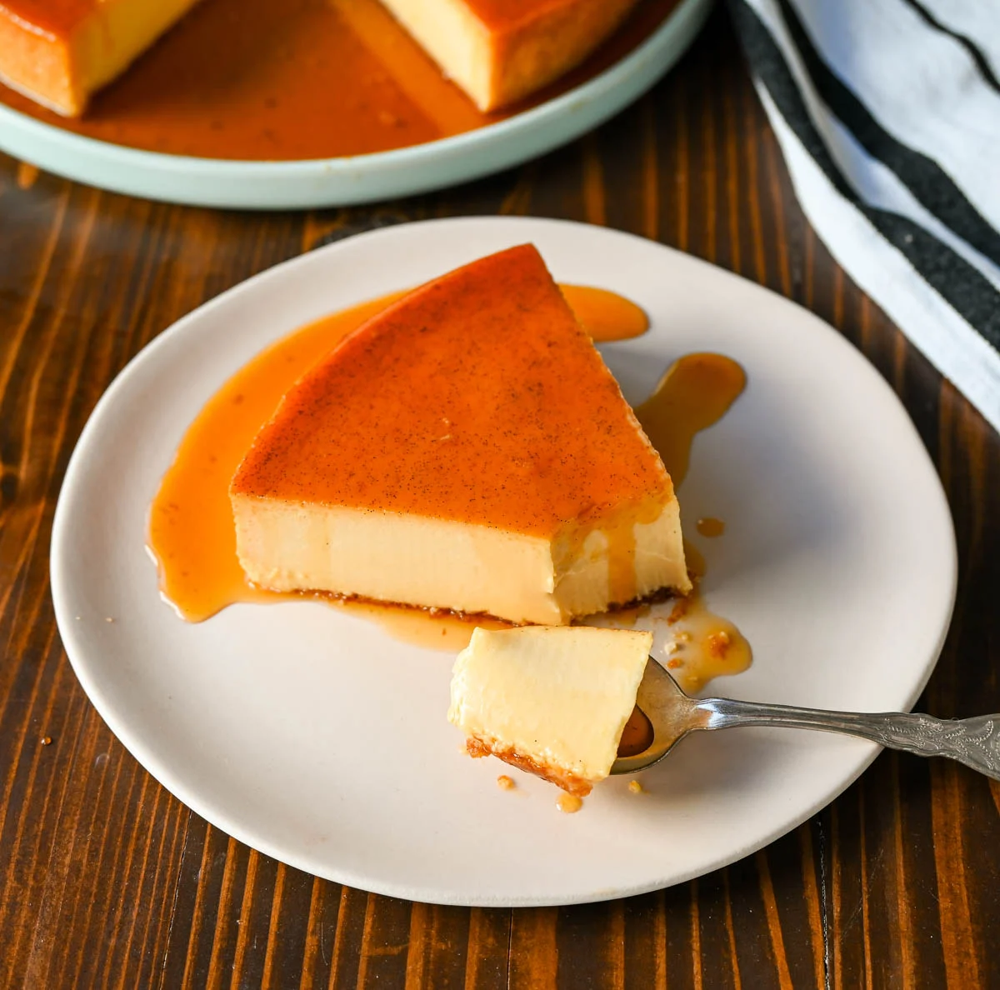

Caramel Flan

Flan is a luscioulsy creamy and decadent desert with a rich custard
base topped with a layer of caramelized sugar. It's known for its smooth
texture, velvety consistency, and perfect sweetness. Flan is typically
made from simple ingredients like eggs, milk, sugar, and vanilla, but it
can be made even better with an addition like cream cheese.
Flan is baked in a water bath, which involves placing the baking dish containing
the flan custard inside a larger pan filled with hot water. This helps ensure
even cooking and prevents the custard from curdling or overcooking. This is an
essential step to making the creamiest flan.
Ingredients
- Evaporated Milk
- Sweetened Condesned Milk
- Sugar
- Eggs
- Cream Cheese
- Vanilla
Steps:
- Preheat oven to 350 degrees.
- In a heavy-bottomed pot, add 1 cup of sugar, and cook on medium-low heat until
sugar is completely melted and a deep golden brown. Pick up the pan and swirl
it around to ensure the sugar is evenly melted.
- Once the sugar is melted, immediately pour into a 9-inch cake plate, pie plate,
or flan pan. Swirl around until evenly coated. Set aside.
- In a large mixing bowl or blender, combine the filling ingredients. Whip until
creamy. Pour into the baking pan.
- Place the pan on a larger baking sheet or roasting pan. Place in oven and
carefully add hot water to reach at least 1-2 inches on the sides.
- Bake at 350 degrees for 1 hour. Carefully remove flan from oven, leaving behind
larger pan filled water. Once flan is removed, carefully remove the pan of hot
water. Place flan back inside roasting pan, filled with water, to slowly cool
for 30 minutes.
- Place flan in the refrigerator to chill for at least two hours, overnight is
ideal.
- When ready to serve, take a knife and run along sides of the pan. Take a cake
plate or serving platter and place it on top of the pan. Flip it over and the
flan with release so the caramel is now on the top. The caramel will slowly
drip off of the pan so make sure you get all of the caramel.
- Serve with fresh whipped cream and strawberries.
Orignal recipe linked below:
Original Recipe Page